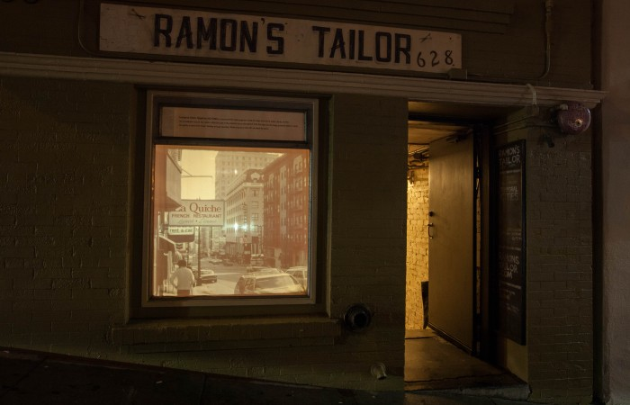
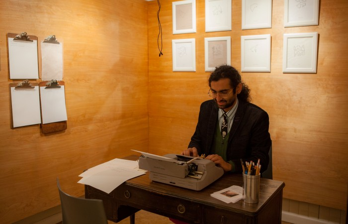
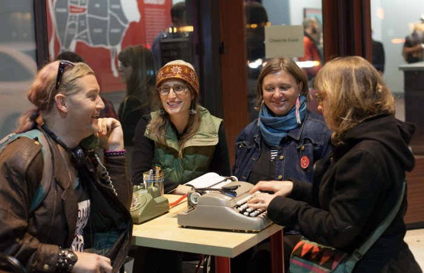
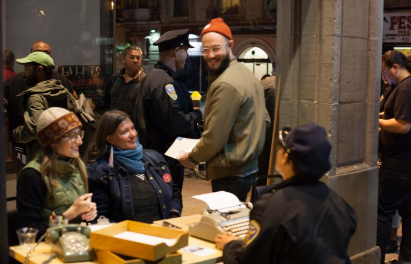
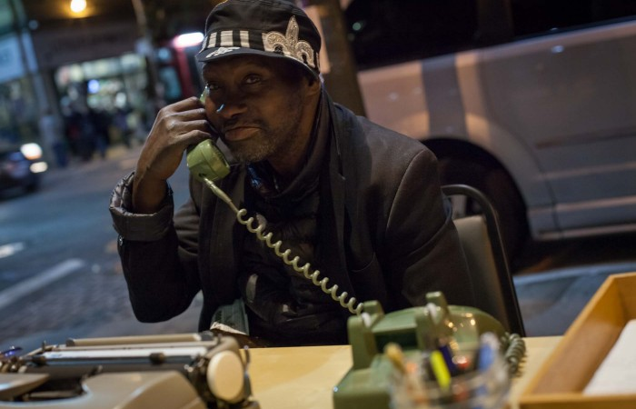
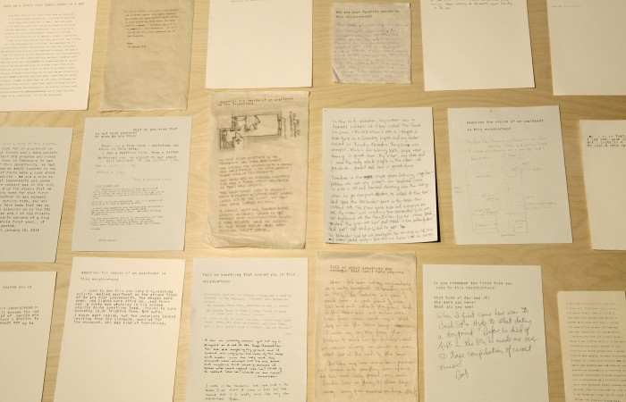

Temporal Cities






Temporal Cities is a public art project that examines the experience of living in San Francisco’s Tenderloin neighborhood, through the stories of its residents. The piece combines analog slide projection and interactive storytelling; a projected image mounted on the street attracts passersby to the installation, where they are encouraged to share a personal story that took place nearby. In collecting and archiving these stories, artists Lizzy Brooks and Radka Pulliam are building a nuanced map that explores the changing nature of the city and our collective ideas of permanence.
To learn more about the project, visit TemporalCities.org.